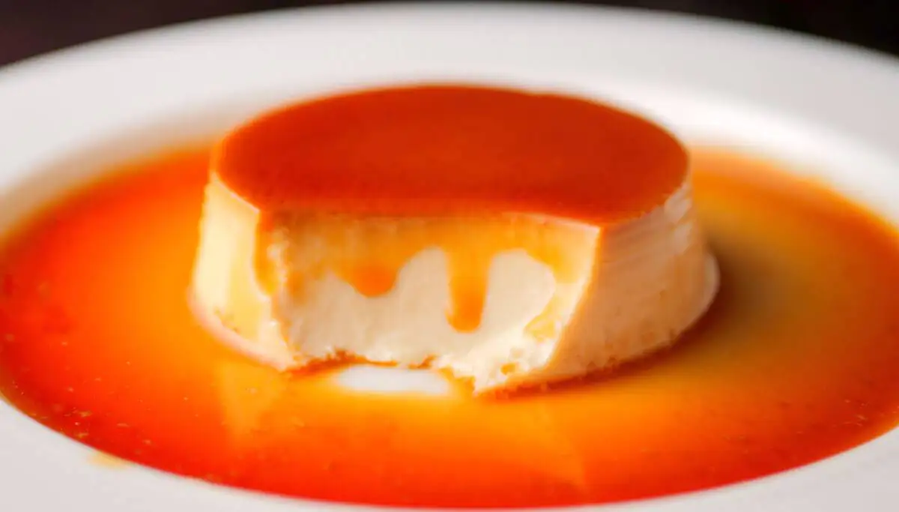

Caramel Pudding

Ingredients:
- 3 tbsp. sugar
- 1 ½ tbsp. water (for the caramel)
- 6 eggs
- 1 can condensed milk
- 1 (empty condensed milk) can water (for the pudding)
- 1 tsp. vanilla essence
- 1/8 tsp. salt (or to taste)
Instructions:
- First we are going to make the caramel and before we get to that, get the baking tray ready (ours was an 8 inch round pan, 1 ½ inches deep).
- Add the sugar and 1 ½ tbsp. water to a small sauce pan. Place the pan over low-medium heat and just let it be for the most part of it. As the caramel is being made you’ll feel like stirring it and when this happens tilt the pan and swirl it. The mixture is first going to bubble and look white. Then it’s going to take on a yellowish tint and then turn orange. When it gets to the orange stage, pour it into the baking tray and swirl to have its bottom coated. The caramel is going to be hot, so do this very carefully. Also do it quickly because caramel sets and hardens quickly. Making caramel can be challenging for first timers, so don’t give up even if you can’t get your caramel to form a nice even layer at the bottom of the tray. The pudding is still going to be nice, we promise.
- Leave the caramel in the tray to cool down while you get on with the rest of the ingredients.
- Preheat your oven to 175 degrees Celsius.
- Break the eggs into a large bowl and mix with the fork or a whisk till it’s slightly frothy.
- Then add the condensed milk, water, vanilla essence and salt, and mix again until everything is well combined.
- Strain the mixture into the tray with the caramel.
- Caramel pudding is baked in a water bath. So to do this, nestle the tray with the caramel inside a slightly larger baking tray (for this we used a 9 inch square tray, 2 inches deep). Do make sure the tray on the outside is not overly large, as this would result in the tray with the pudding to sort of float around and that could result in water splashes and accidents as you attempt to place it in the oven.
- Then pour hot (just boiled) water into the larger tray. The water level should reach half of the baking tray with the pudding.
- Transfer the trays to the middle rack of the preheated oven and bake until it looks set. The top should jiggle a little but it shouldn’t be liquid. For us this took 50 minutes. But, oven temperatures differ so just keep checking towards the end and make adjustments. Whatever you do, just be careful not to burn yourself. Over bake it a little and the pudding is going to have holes in it, and that’s not going to be so bad, but if you over bake it a lot, it’s going to taste really eggy and a bit unpleasant, so be a bit careful about it.
- When the pudding is baked, remove the trays from the oven very carefully. Let it cool down a little at room temperature and then cover and transfer it to the fridge.
- Keep it in the fridge for around 2 hours and then take it out of the tray. To do this, first run a knife around the edge and then place a plate on top of the tray. Then just flip so that the plate is now on the bottom and the pudding sits on it nicely with the caramel on top. That’s it.
| Number |
Name |
State |
| 1 |
Ali |
Kedah |
| 2 |
Dani |
Negeri Sembilan |
| 3 |
Ehsan |
Selangor |
| 4 |
Faris |
Johor |